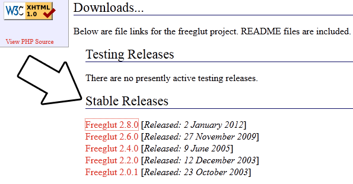

Setting up freeGLUT in Linux
Last Updated 8/09/12
Since there are so many flavors of Linux these tutorials might not work on your Linux set up. If you've tried everything and are still having problems, contact me and I'll try to add on a distro specific fix.
In the age of packaging managers, a lot of the work is done for you when installing libraries. You'll need root privileges to install packages so make sure to use "su"
or "sudo" if you're not logged in as root.
1) For those of you who have Advanced Packaging Tool available (ie Ubuntu and Debian) you'll want to search the apt-get cache to find the current freeGLUT version to install. You can search the apt-get available packages using the command:
Extract the archive and cd to the folder that got extracted. Configure the installation using
1) For those of you who have Advanced Packaging Tool available (ie Ubuntu and Debian) you'll want to search the apt-get cache to find the current freeGLUT version to install. You can search the apt-get available packages using the command:
apt-cache search freeglut
You'll want to download the development version of freeGLUT. As of the last update of this tutorial, the development package of freeglut is freeglut3-dev. You can install this package using the commandapt-get install freeglut3-dev
2) If you use the Yellow dog Updater, Modified (used in Fedora and CentOS) you can enter the command:yum search freeglut
To search for the freeGLUT developers package. As of the last update of this tutorial, the developer package for freeglut is freeglut-devel. You can install this package using the command:yum install freeglut-devel
3) If somehow you don't have a package manager, you can install from the source the classic Unix way. Download the latest source from the freeGLUT website.
Extract the archive and cd to the folder that got extracted. Configure the installation using
./configure
Compile the source using the make commandmake all
Finally, install the package using the make commandmake install
4) Now that you've installed the development libraries, it's time to start up your IDE/compiler.| Select Your IDE/Compiler | |
| Code::Blocks 10.05 | |
| Command Line | |
| Back | |